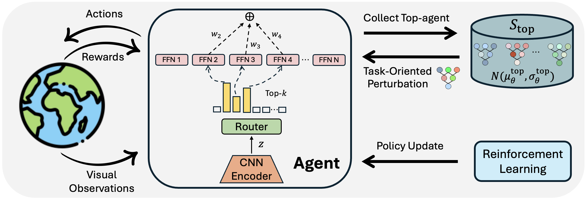
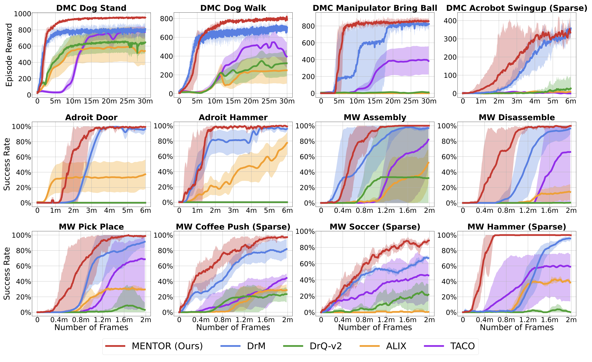
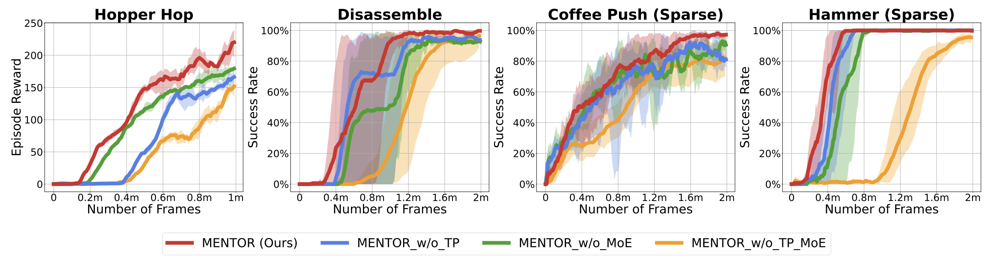

MENTOR: Mixture-of-Experts Network with Task-Oriented Perturbation for Visual Reinforcement Learning
* Equal contributions
ICML 2025
Abstract
Visual deep reinforcement learning (RL) enables robots to acquire skills from visual input for unstructured tasks. However, current algorithms suffer from low sample efficiency, limiting their practical applicability. In this work, we present MENTOR, a method that improves both the architecture and optimization of RL agents. Specifically, MENTOR replaces the standard multi-layer perceptron (MLP) with a mixture-of-experts (MoE) backbone, enhancing the agent's ability to handle complex tasks by leveraging modular expert learning to avoid gradient conflicts. Furthermore, MENTOR introduces a task-oriented perturbation mechanism, which heuristically samples perturbation candidates containing task-relevant information, leading to more targeted and effective optimization. MENTOR outperforms state-of-the-art methods across three simulation domains---DeepMind Control Suite, Meta-World, and Adroit. Additionally, MENTOR achieves an average of 83% success rate on three challenging real-world robotic manipulation tasks including Peg Insertion, Cable Routing, and Tabletop Golf, which significantly surpasses the success rate of 32% from the current strongest model-free visual RL algorithm. These results underscore the importance of sample efficiency in advancing visual RL for real-world robotics.
Method

MENTOR includes two key enhancements, aimed at improving sample efficiency and overall performance in visual RL tasks. The first enhancement addresses the issue of low sample efficiency caused by gradient conflicts in challenging scenarios, achieved by adopting an MoE structure in place of the traditional MLP as the agent backbone. The second enhancement introduces a task-oriented perturbation mechanism that optimizes the agent's training through targeted perturbations, effectively balancing exploration and exploitation. The overview of the MENTOR architecture is shown in the figure above.
Results

- MENTOR outperforms leading model-free visual RL methods on 12 challenging tasks across three simulation domains---DeepMind Control Suite, Meta-World, and Adroit.
- MENTOR can be successfully and efficiently trained in real-world RL settings without any expert demonstrations and solely using RGB images as policy input, achieving an average of 83% success rate on three complex robotic manipulation tasks including Peg Insertion, Cable Routing, and Tabletop Golf, which significantly surpasses the success rate of 32% from the current strongest model-free visual RL algorithm (DrM).
Highlights
In this section, we present the whole training and evaluation videos of MENTOR on the real-world robotic manipulation tasks, which demonstrates the effectiveness of MENTOR in achieving high success rates and high robustness on challenging tasks. More quantitative results can be found in the paper.
Peg Insertion
Training video of MENTOR on the Peg Insertion task.
Evaluation video of MENTOR on the Peg Insertion task.
Cable Routing
Training video of MENTOR on the Cable Routing task.
Evaluation video of MENTOR on the Cable Routing task.
Tabletop Golf
Training video of MENTOR on the Tabletop Golf task.
Evaluation video of MENTOR on the Tabletop Golf task.
Appendix
Technical Contribution Ablation Study

- We conducted additional ablation studies on four diverse tasks: Hopper Hop, Disassemble, Coffee-Push (Sparse), and Hammer (Sparse). These studies aim to decouple the effects of the MoE architecture and the Task-oriented Perturbation (TP) mechanism proposed in our paper.
- The table shows the normalized sample efficiency of each setting. MENTOR (Ours) achieves an average of 22.6% and 26.1% less training time over the 4 tasks compared with MENTOR_w/o_TP and MENTOR_w/o_MoE.
Multi-Task Experiment Results
To further demonstrate the multi-task capabilities of MoE, we conducted additional multitask learning experiments on Meta-World. In these experiments, we used four task combinations, consisting of 3, 4, 5, and 7 tasks, respectively. The figure below shows the evaluation accuracy during training. In this experiment, neither MENTOR nor DrM used perturbation, with the only difference being the use of MoE versus MLP.
Mixture-of-Experts Hyperparameter Ablation Study
Figure: Visualization of MoE hyperparameters and their impact on performance. Results show that while the optimal setting is MoE has 8 experts, performance remains consistent across 4, 8, and 32 experts as long as top_k = 4.